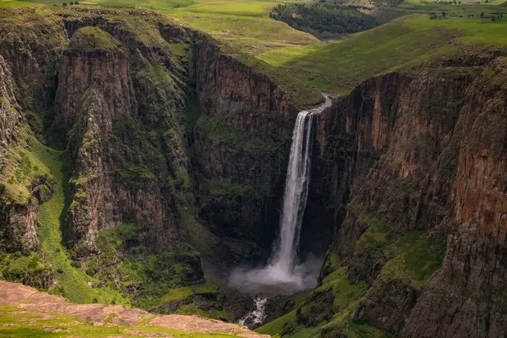

Maletsunyane Falls, located in Lesotho, has a rich history tied to the country's natural beauty and cultural heritage. The name "Maletsunyane" translates to "Place of smoke" in Sesotho, reffering to the mistey veil created by the waterfall.
Historically, the area around MAletsunyane has been significant for local communities, offering spritual and cultural connections. The falls are part of the scenic Semonkong landscape, attracting visitors for adventure and nature appreciation

Lesotho, Semonkong
26-29 November 2026